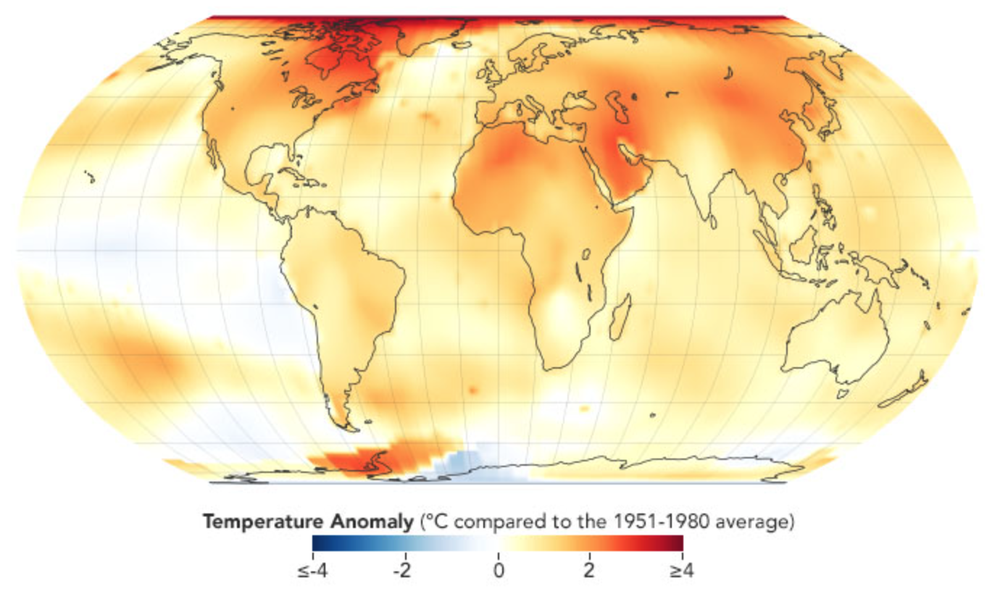
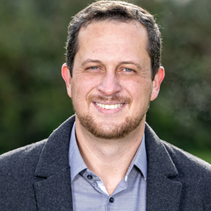
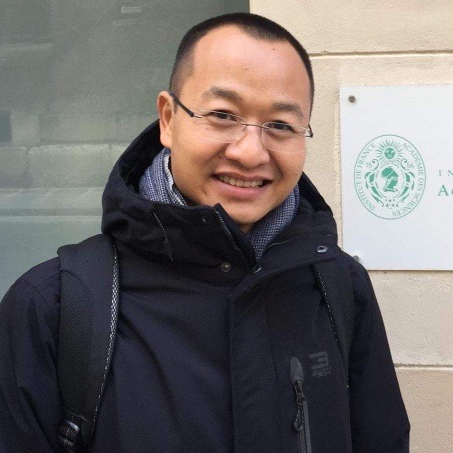
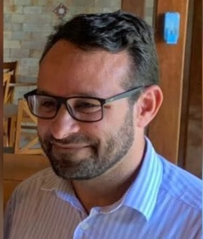

AI for Environmental Intelligence @ CAI 2024
Navigating the Future: Exploring innovative solutions to pressing environmental challenges through AI, forging a path from the past into the future with present technologies.
Pressing environmental challenges, such as climate change, deforestation, pollution, and loss of biodiversity, require urgent global and local attention. Addressing these issues demands multidisciplinary collaborative efforts to develop and implement large-scale sustainable solutions, ensuring the health and resilience of our planet. The machine learning (ML), or artificial intelligence (AI) community wishes to take action on solving these environmental issues but is often uncertain about the most effective intervention with maximum impacts. This workshop seeks to highlight potential environment-related research using ML/AI tools and illustrate the invaluable role ML/AI can play in reducing greenhouse gas emissions, large-scale estimation of carbon stock and biodiversity, smart and green transportation systems, effective optimization of natural resources such as water and fisheries, ensuring sustainable agricultural practices, and resilience adaptation/mitigation practices to the reality of the changing climate. Recognizing the interdisciplinary nature of environmental intelligence research, the workshop acknowledges that addressing this issue encompasses a spectrum of actions, ranging from theoretical advancements to the deployment of new technologies, especially involving key stakeholders such as researchers, citizens, policymakers, and public and private organizations. Many of these actions not only present opportunities for substantial real-world impact but also pose intriguing challenges for academic research.
|  |  |
| The image above shows global temperature anomalies in 2022, which tied for the fifth warmest year on record. The past nine years have been the warmest years since modern recordkeeping began in 1880. A one-degree global change is significant because it takes a vast amount of heat to warm all of the oceans, the atmosphere, and the land masses by that much -- [Source] | |
Call for Papers
We cordially invite submissions and participation in our “AI for Environmental Intelligence: the Past, the Present, and the Future” workshop (cai2024-ai4e.github.io) that will be held at IEEE Conference on Artificial Intelligence (CAI’2024) at the Sands Expo & Convention Centre, Marina Bay Sands, Singapore (June 25-27, 2024).
The submission deadline is April 25th, 2024, 23:59 AoE. Submission site (available soon) opens on March 1st, 2024! We welcome submissions related to any aspect of AI for Environmental Intelligence, including but not limited to:
- Environmental monitoring
- Sustainable agriculture and food
- Behavioral and social science
- Smart and Green Building Control
- Carbon stock and Biodiversity Estimation
- Climate finance, economics, and justice
- Climate science and climate modeling
- Disaster management and relief
- Earth observations and monitoring
- Earth science
- Ecosystems and biodiversity
- Extreme weather
- Forestry and other land use
- Health
- Heavy industry and manufacturing
- Local and indigenous knowledge systems
- Materials science and discovery
- Oceans and marine systems
- Power and energy systems
- Public policy
- Societal adaptation and resilience
- Supply chains
- Transportation
The workshop will employ a double-blind review process. Each submission will be evaluated based on the following criteria:
- Soundness of the methodology
- Relevance to the workshop
- Societal impacts
We only consider submissions that haven’t been published in any peer-reviewed venue, including CAI 2024 conference. We allow dual submissions with other workshops or conferences. The workshop is non-archival and will not have any official proceedings. All accepted papers will be allocated either a poster presentation or a talk slot.
Important Dates
- Submission deadline: April 24th, 2024, 11:59 PM Anywhere on Earth (AoE)
- Author notification: May 24th, 2024
- Camera-ready deadline: June 15th, 2024, 11:59 PM Anywhere on Earth (AoE)
- Workshop date: TBD
Submission Instructions
Papers should be submitted to OpenReview: https://openreview.net/group?id=IEEE.org/CAI/2024/Workshop/AI4E
Submitted papers should have up to 6 pages (excluding references, acknowledgments, or appendices). Please use the CAI submission template provided at https://ieeecai.org/2024/paper-submission-and-guidelines/.
Submissions must be anonymous following CAI double-blind reviewing guidelines, and IEEE Code of Ethics. Accepted papers will be hosted on the workshop website and published in Springer Book series on Adaptation, Learning, and Optimization.
Submission website: OpenReview
Speakers (Updating)
Panelists (Updating)
Organizers
 |
 |
||
| Khoa D Doan VinUniversity & CEI, Vietnam |
Huong T (Helen) Nguyen University of Illinois at Urbana-Champaign, USA |
Nitesh Chawla University of Notre Dame/Lucy Family Institute for Data and Society, USA |
Alexandre D'Aspremont Ecole Normale Supérieure, France |
 |
 | ||
| Karina Gin Yew-Hoong National University of Singapore, Singapore |
Erick G. S. Nascimento Surrey Institute for People-Centred AI, University of Surrey, UK |
Harry Nguyen University College Cork, Ireland |
Publication Chairs |
|||
|  | |||
| Kok-seng Wong VinUniversity & CEI, Vietnam |
Doanh N Nguyen VinUniversity & CEI, Vietnam |
||
Publicity and Industry Chairs |
|||
|  | |||
| Alex A. Bandeira Santos SENAI CIMATEC, Brazil |
Arshdeep Singh Centre for Vision, Speech and Signal Processing, University of Surrey, UK |
||
Organizers affiliations